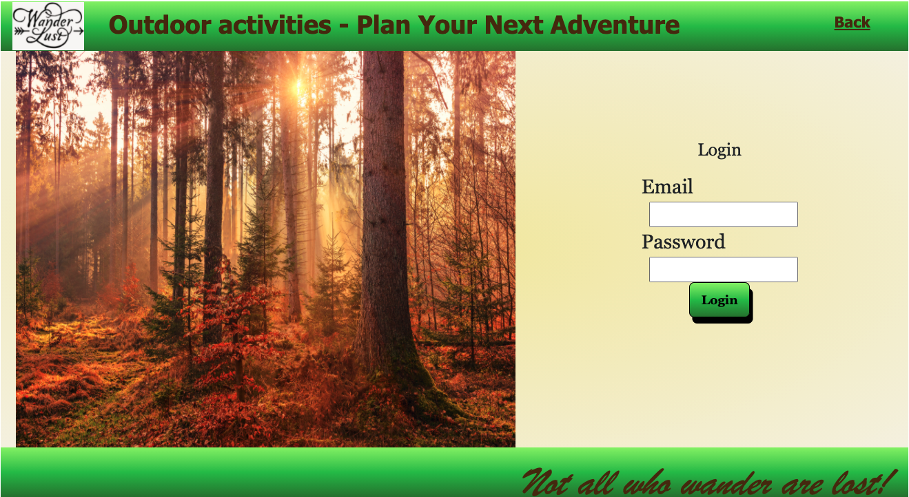
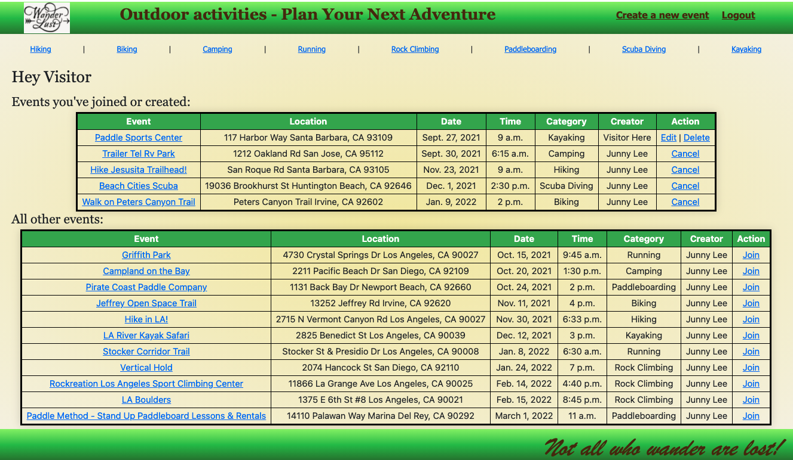
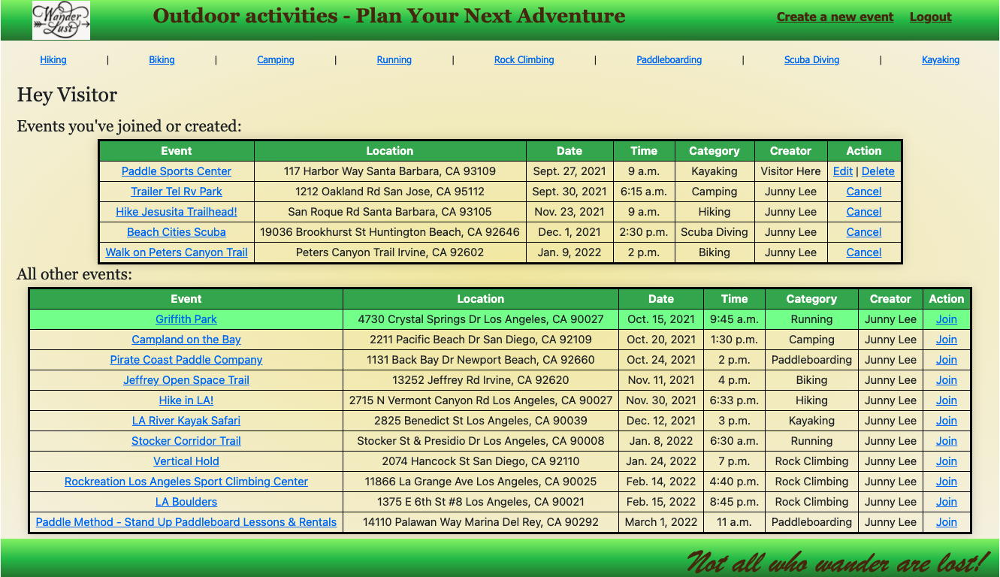

WanderLust is a place where users can create outdoor events for others to join. The home page looks like this:

From here, the user can navigate into a category of activities to see the existing events. If not registered/logged in, what the user can do and see are limited. As one can see below, a not-logged in user can't see details of the event.

Let's sign into an existing account to see more features.
Once logged in, user is directed to a page with all the created events. The top table shows all the events that the logged in user has created or joined. The bottom table shows all the other events that the logged in user can join.
Since the user is logged-in, he/she can see the details of any existing events. Let's click into the "Griffith Park" event to see.
In any specific event page, the user can see an image associated to the event, the address of the event, the number of people who joined the event, the current weather at the location of the event, the weather forecast for future days, and the location of the event on a map.

Some other functionalities not shown:
- Logged-in user can edit or delete events that he/she created themselves.
- Logged-in user can create new events.
Back to Top